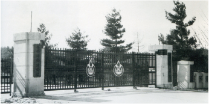
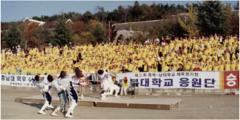

国立忠北大学72年的发展历程
-
腾飞
1951

清州农业学院建校
道内居民对教育和人才培养的渴望使学校在战火中诞生
- 1951. 09. 27.
- 清州农业学院建校
- 1951. 10.
- 组织学生自治会
- 1953. 03. 31.
- 清州农业学院第一届毕业典礼
- 1953. 04. 01.
- 升级为清州农业大学(4年制)
- 1956. 01. 22.
- 成立清州农业大学校友会
-
迁移
1956

道立忠北大学
中部地区高等教育机构，为国家发展培育中枢人才
- 1956. 04. 23.
- 更名为道立忠北大学
- 1956. 09. 25.
- 搬入现位于开新洞的新校舍
- 1960. 03. 14.
- 发行第一期论文集
- 1961. 04.
- 学生会馆开馆
-
基石
1962

国立忠北大学
学问殿堂初具雏形，朝着远大梦想迈进
- 1962. 03. 01.
- 改制为国立忠北大学农学院
- 1962. 11. 09.
- 举办首届“忠北大之夜”
-
发展
1963
国立忠北大学
도积极推进大学体系化管理，朝着综合性大学规模的发展迈进，以实现本省(道)内居民的期盼和愿望
- 1963. 03. 01.
- 改组为国立忠北大学
- 1968. 01. 10.
- 批准设立研究生院
- 1968. 09. 26.
- 举办首届开新庆典
- 1973. 12. 29.
- 设立研究生院博士课程
- 1977. 09. 22.
- 获得文教部公布，升级为综合性大学
-
飞跃
1978
忠北大学
建校28年后跃升为综合性大学
- 1978. 03. 01.
-
升级为国立忠北大学
设有4个学院、27个系, 招生1,190名
- 1978. 03. 09.
- 首任校长郑范谟就任，忠北大学举行挂牌仪式
- 1979. 09. 22.
- 获批设立人文学院
- 1985. 11. 23.
- 中央图书馆开馆
-
国际化
2000
忠北大学，一所全球化的大学
为发展为世界级大学奠定基础
- 2000. 02. 12.
- 国际教育院开院
- 2001. 01. 01.
- 原清州科学大学管理权移交至本校
- 2005. 03. 01.
- 设立综合人力开发院
- 2009. 08. 07.
- 设立入学管理部
- 2010. 08. 27.
- 设立基础教育院
- 2013. 06. 17.
- 设立创业支援团
-
共赢
2015

忠北大学，引领区域相生共赢发展的核心
通过构建校园集群，谋求与区域社会的共同发展
- 2015. 12. 17.
- 梧仓校区融合技术院开院
- 2017. 02. 21.
- 梧仓校区融合技术院开院
- 2021. 10. 01.
- 忠北大学动物医院世宗分院开院
-
创新
2023

忠北大学，世界级高校
持续创新，促进区域社会和大学共同成长，为未来做好准备
- 2023. 04. 17.
- 第22任校长就任
- 2023. 06. 01.
- 梧仓电波开阔试验场开工
- 2023. 05. 11.
-
与韩国交通大学签署
“培育30所世界级高校项目”谅解备忘录
- 2023. 07. 01.
-
组织改编(学生处职业规划及就业部，
产学合作团组织效率化，兼任产学合作团团长、
创业支援团团长，调整企划处、研究处、
产学合作团的业务分工)